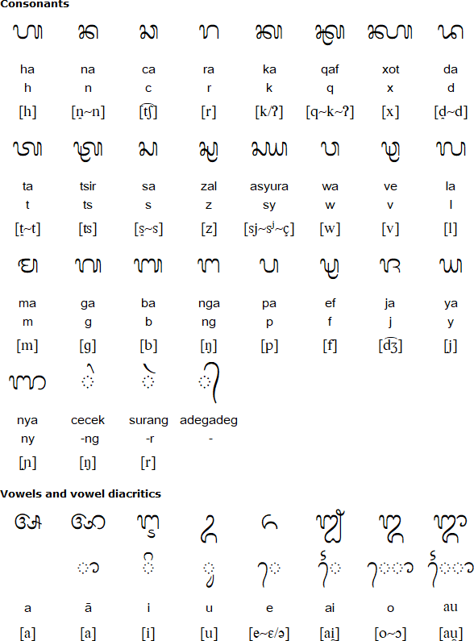

Aksara Sasak, dikenal juga sebagai aksara Jejawaan Sasaq, adalah salah satu aksara tradisional Indonesia yang berkembang di Pulau Lombok.[1] Aksara ini digunakan oleh suku Sasak untuk menulis bahasa Sasak. Aksara Sasak merupakan turunan dari aksara Brahmi India melalui perantara aksara Kawi dan berkerabat dekat dengan aksara Bali dan aksara Jawa.[2]
Pelestarian aksara ini merupakan bagian integral dari usaha mempertahankan identitas dan kebudayaan suku Sasak, yang juga sering didapati dalam literatur kuno seperti Lontar Sasak yang berisi nilai-nilai sejarah, pengobatan tradisional, cerita rakyat, hingga tata aturan masyarakat di masa lampau.